MAPS 4 now integrates closely with EPLAN Electric P8 from version 2.3 onward, which allows you to take advantage of the complete automation solution life-cycle management provided by MAPS.
For ease of use, we recommend that you install the MAPS 4 Server on the same computer on which you have EPLAN Electric P8 installed.
IMPORTANT: Please ensure that you install the 32 bit EPLAN when using 32 bit MAPS (and install 32 bit Microsoft Excel) and likewise that you install the 64 bit EPLAN when using 64 bit MAPS (and install 64 bit Microsoft Excel); since a 64 bit EPLAN cannot communicate to a 32 bit MAPS and/or 32 bit Excel and vice-versa.
Note: You need to purchase the EPLAN Electric P8 and EPLAN API Runtime License in order to integrate the use of EPLAN into MAPS.
When the MAPS 4 Server is installed the EPLAN-specific files are installed into the C:\ProgramData\Adroit Technologies\MAPS\EPLAN\ folder by default.
However when EPLAN is not installed on the same computer as the MAPS Server, then you either need to share this folder so that it can be browsed over the network or MANUALLY copy this ENTIRE folder to the EPLAN computer. Since EPLAN needs ALL of these files to integrate with MAPS 4.
You also need to add the MAPS add-on for EPLAN, which adds the MAPS menu in EPLAN Electric P8.
Launch EPLAN Electric P8.
Open the Utilities menu item in EPLAN Electric P8 and select API add-ins...
Browse for the Eplan.EplAddin.Addin.MAPS.dll, in the folder containing the MAPS-specific EPLAN files described above.
Click the Ok button and wait for this process to finish (no progress bar is displayed).
The MAPS menu should now appear within EPLAN Electric P8.
When creating your schematics in EPLAN, you can now add page macros for each item of electrical or instrumental equipment supported by MAPS and configure the applicable PLC names it belongs to and the addressing of each signal.
Once all your schematics and plant overviews have been created and configured as needed, you can now export the EPLAN project as a Microsoft Excel workbook from the MAPS Project Export option of the MAPS menu in EPLAN itself.
You then need to organise the electrical and instrumentation equipment according to the extended physical model of the hierarchical structure specified by the ISA S88 and S95 standards, required by the MAPS project, since EPLAN does not do this.
In other words this involves adding the necessary Plant Areas and then assigning the relevant PLCs to them and then creating the various programming Units within each PLC and assigning the relevant electrical and instrumentation equipment to each Unit.
You can also perform any other additional bulk configuration of your MAPS project in Microsoft Excel, at this stage, if needed.
Then in the MAPS Designer use the Import from Excel facility to import this pre-configured MAPS project.
After creating your MAPS project, you can export all the equipment drawings that you created in EPLAN into your MAPS project as PDFs from the Generate EPLAN Drawings item of the MAPS menu in EPLAN.
Your operators can then view these documents in the MAPS Operator and can add comments to the relevant drawings in the PDF viewer, so that the necessary changes can be made.
Since MAPS is always the MASTER it is recommended that any change to the MAPS project, affecting its schematic, is made in the MAPS Designer for instance changing I/O Addressing. Then right click the MAPS project and select the Create or Update EPLAN Project item to recreate the associated EPLAN project with the updated drawings.
IMPORTANT: This will only work if EPLAN Electric P8 is actually installed on the same computer as the MAPS Designer is running on.
If this is not the case, then right click the MAPS project and select the Export to Excel option and then re-import this Excel sheet into EPLAN using the MAPS menu item in EPLAN and selecting the MAPS Project Import item.
Then you need to re-export these updated EPLAN documents so that they are made available to your MAPS Operators, by selecting the Generate EPLAN Drawings item of the MAPS menu in EPLAN, which allows you to publish the modified drawings to the MAPS document repository.
Create a project in EPLAN Electric P8 (or open an existing project .ELK file), which creates a number of sub-folders on the left hand side tool window.
Draw your schematics as needed.
When a schematic is displayed e.g. &EDB/1: In this case this schematic is in the EDB (Plant Overview) sub-folder and the schematic is named: 1 Overview.
Right click the EPS (Schematic) sub-folder and select the Insert page macro… option.
Then browse to where these MAPS-specific EPLAN Page Macros are located and select the page macro that corresponds to the required item of electrical or instrumental equipment and click the Open button.
Note: These MAPS-specific EPLAN Page Macros are installed by the MAPS Server (into the C:\ProgramData\Adroit Technologies\MAPS\EPLAN folder by default) and so when EPLAN is not installed on the same computer as the MAPS Server, you need to make this folder available to this computer before they can be used.
In the Adapt structure dialog, click the * column under Target section and double click it to highlight its contents, since by default this has the name of the page macro representing the selected item of equipment.
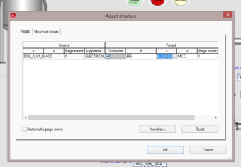
Type in the actual name of this item of equipment in your plant and click the OK button.
In the Insertion mode dialog that is displayed, ensure that the default Do not modify option is selected and click the OK button.
This adds the specified item of equipment to the EPS (Schematic) sub-folder, expand this item and expand the initial item to display the name of the MAPS Template that this page macro represents, in this case:
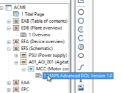
This changes the displayed graphic to the schematic for this item of equipment.
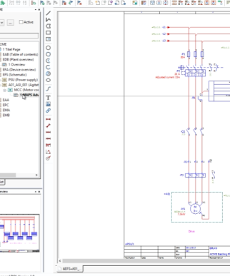
Right click the name of the specified item of equipment in the EPS (Schematic) sub-folder and select Properties… to display the Page properties dialog in which the Page description is the name of the MAPS Template that this page macro represents.
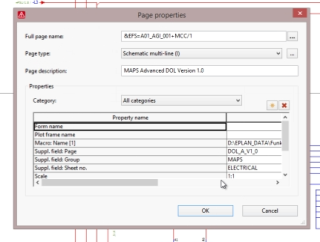
Scroll to the bottom of this page and in the last blank row, type in the name of the PLC that contains this item of equipment, in this case BAT_PLT_A and then click the OK button.
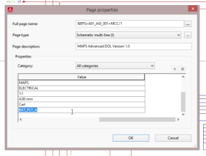
Since each Page Macro consist of 1 or more PLC connection points, select each PLC connection point individually on its schematic and right click and select the Properties... item.
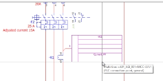
This displays the Properties (components) dialog for this PLC connection point:
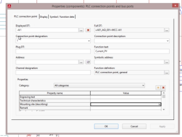
Type in the required Address, in this case D1024 and click the OK button.
The specified address will appear in the schematic:
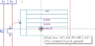
After you have once you have finished configuring the plant equipment of all your drawings, then:
Select the MAPS menu and the MAPS Project Export option.
Note: If this MAPS menu does not appear in EPLAN, then you need to add the MAPS add-on for EPLAN, see the EPLAN-specific configuration section above for instructions on how to do this.
In the New or Existing Workbook dialog. click the No button to the following confirmation: Do you want to UPDATE an existing MAPS project Excel workbook? Since we are creating a new MAPS project.
This displays the Creating MAPS Project Export dialog which provides a progress dialog to indicate how long each of the specified steps take as each configured item of equipment is creating for this MAPS project export.
When this process is finished, the Save as Microsoft Excel dialog is displayed.
Specify the name and/or location of the Excel Workbook (*.xlsx) file that should contain this MAPS project export, which is called Book1 by default. Type in the name of your MAPS project, in this case ACME_MAPS_EPLAN_PROJECT.xlsx and click the Save button.
This opens this Excel Workbook in Microsoft Excel, which contains a number of different worksheets, which each provide their own column headings and are separately configured as needed.
At this point you need to add the S88 Structure required by the MAPS Project to this workbook because EPLAN does not implement nor adhere to the S88 structure, therefore:
In the Plant Area Data worksheet you need to add all your plant areas and specify “Default” in their MAPS Server Name field and “Adroit” in their Adroit Data Source field.
In the PLC Data worksheet all the PLCs will be added from the EPLAN project. However you need to specify the Plant Area Name (as specified in the Plant Area Data worksheet) in which each of these PLCs belong.
In the Unit Data sheet, specify the required programming unit names and in which PLC Name (as specified in the PLC Data worksheet) these units belong.
Lastly in the Electrical Equip Detail and Instrumentation Equip Detail worksheets, specify the Unit Name (as specified in the Unit Data worksheet) in which each item of equipment belongs. You can leave the Graphic field empty as this can be specified later during the importing process into MAPS.
In this case, the following shows how the BATCHING unit is being added to all the equipment in the Electrical Equip Detail worksheet tab:
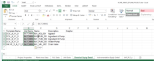
Save this Excel workbook during and after you have created the required S88 structure of your MAPS project.
Open the MAPS Designer.
Right click on the MAPS root node of the MAPS window and select the Import from Excel option.
Specify the Excel workbook that you have just saved, in this case ACME_MAPS_EPLAN_PROJECT.xlsx in the Excel file path field.
Then click the Test Excel file configuration button and ensure that this workbook has been correctly configured i.e. that the result is Successful before continuing.
If you did NOT specify the Graphic field of your equipment in your Electrical Equip Detail and Instrumentation Equip Detail worksheets need to, then click the Change Template Graphics button to specify their required graphics, you can also use this to change the name of one of your items of equipment and make any last-minute adjustments before creating your MAPS project from this Excel workbook.
Ensure the Create New Project radio button option is selected in the Import from Excel configuration dialog, which is selected by default.
Type in the Name of this MAPS project, in this case ACME and the required description of this MAPS project in the Description field.
If necessary, you can check the Create Tags after the import is successful checkbox.
If this is checked then the required Agent Server database is automatically created as part of the importing process, which can (depending upon the size of the project) significantly increase the time created to import the project.
If you leave this option unchecked then you can import the project and then at a later time, right click the MAPS project and select the Sync Tags option to create the Agent Server database later, which is what we will be doing in this case.
Tip: Another reason for not checking this option is when you want to modify the I/O addresses before creating the Agent Server database, which does not apply in this case.
Click the Finish button.
A progress dialog is displayed during this MAPS project importing process, at the end of which the specified MAPS project is created and its various components can be viewed in the MAPS window:
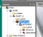
Right click the PLC, in this case BAT_PLT_A and select the Build PLC Project item.
If necessary, if you get a confirmation dialog that this PLC project already exists select Yes to overwrite it. Typically this will not happen as it will be the first time that this PLC project is created.
Wait for this process to finish.
At the end of this process, GX Works2 will be launched with this PLC project already loaded so that you can write (download) this PLC project to the PLC. In this case the GX Simulator2.
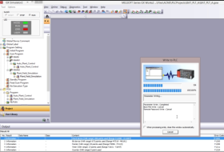
Then minimise this application and return to the MAPS Designer
If you did NOT check the Create Tags after the import is successful checkbox when importing the MAPS project, then do the following:
Right click the Plant Area in the MAPS window, in this case PLANT_A
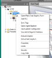
And select the Sync Tags option, which ensures that all the Adroit SCADA tags required by this MAPS project are created.
Select Yes to sync these tags in Silent mode so that no messages or dialogs are displayed during the syncing process and it will continue uninterrupted until it is finished.
Wait for the progress dialog to close.
At the end of this process select Yes to the confirmation to save the Adroit agents database.
At this time you can also configure your preconfigured project graphic forms, which at this point only have the specified electrical and instrumentation equipment (using their specified graphical representations) added to them.
So you can from for instance you can add additional graphics to them from the provided Static Graphics library to them and then re-organise the equipment accordingly.
Simply browse to and select the required graphic from the library and then right click the required graphic forms and select the Paste Graphic Form contents option. In this case BATCHING_GF looks like this:
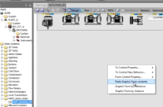
Then drag the graphic to the required position. Do this repeatedly until you have added all the necessary graphical elements.
In this case, for the purposes of illustration, we are using a pre-assembled graphic that already contains a fully configured plant layout, but in practice you will probably need to add each item of equipment individually and link them up with pipe sections.
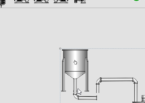
And reorganise the available equipment accordingly:
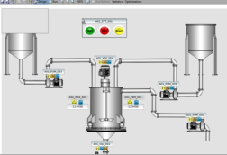
Typically the MAPS project will be run in the MAPS Operator so that this process can be monitored and/or controlled, as needed on as many operator terminals as needed.
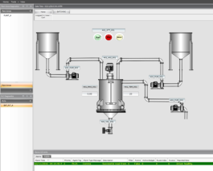
Now you can export all the equipment drawings that you created in EPLAN into your MAPS project as PDFs so that they are available to your operators, if they need to suggest changes to their configuration, which is typically required during maintenance or fault finding. In these cases it is easier for your operators to open the drawing from within the MAPS Operator and quickly view where a specific signal is wired too, especially if EPLAN is not on the same computer.
Furthermore a user can make comments on these drawing using a PDF viewer, for instance where an actual signal in the field is wired to a different terminal on the PLC. This PDF document then needs to be manually communicated to the draughtsman/MAPS Designer to ensure the change is made accordingly in MAPS to ensure that the associated EPLAN project and hence the drawing is updated correctly.
So in EPLAN, select the MAPS menu and select the Generate EPLAN Drawings item.
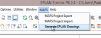
Then select the folder of this MAPS project that will contains these EPLAN drawing in the Browse For Folder dialog. In this case ACME\Documents (C:\ProgramData\Adroit Technologies\MAPS\Configurations\Default\Files\ACME\Documents):
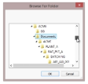
Then click the OK button to display the Export Equipment Drawings (PDF export) dialog that provides a progress bar, which indicate how long this process will take:
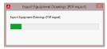
To view these documents in the MAPS Operator:
Display the graphic form that contains the required electrical and/or instrumentation equipment.
Right click this graphic form and select the Documents item and its Show Information sub item.
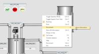
You should notice that orange D’s now appear to the left of all the equipment names in this graphic form.
Tip: This uses the standard document library available for all MAPS projects which allow you to associate any number of different documents to your items of equipment, not just these EPLAN drawing PDFs.
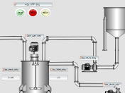
To display the drawing associated with an item of equipment, click the orange D and select the Open Documents item:
This displays the Open Documents dialog, which provides the selected Equipment name so that an operator can ensure that the required item of equipment has been selected and then a drop down list of all the available documents associated with this item of equipment. So select the required document and then click the Open button.
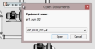
To display the specified document in your default PDF viewer:
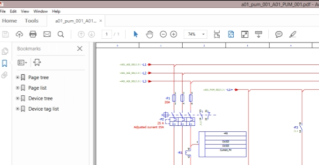
But that is not all, an operator is then able (provided the PDF Viewer supports this functionality, such as the standard Adobe PDF reader) to add comments to this equipment drawing so that the necessary changes can be made:
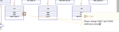
When you close the PDF viewer it will ask you to save the changes that you have made, in which case save this document and then send this document to the relevant draughtsman/MAPS Designer to address the requested change, if applicable and make the necessary changes in the MAPS Designer.
For instance in this case to swap these addresses to right click this item of equipment, select its IO Config item in the MAPS project (in the MAPS window):
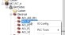
Then make the requested changes:
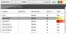
Then click the Finish button.
Then right click the MAPS project, in this case ACME and select the Create or Update EPLAN Project item.
Then wait for the progress dialog to close, which details all the changes that are made to the EPLAN project as its various pages are updated with any changes:
IMPORTANT: This will only work if EPLAN Electric P8 is actually installed on the same computer as the MAPS Designer is running on.
If this is not the case, then right click the MAPS project and select the Export to Excel option and then re-import this Excel sheet into EPLAN using the MAPS menu item in EPLAN and selecting the MAPS Project Import item.
When opening EPLAN, you will notice that these addressing changes have been made to the relevant schematic, so that now they are up to date:
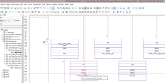
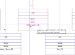
In this way you can easily ensure that your equipment schematics remain up to date and do not become outdated.
Now would be a good time to select the MAPS menu in EPLAN and select the Generate EPLAN Drawings item and redo this process to ensure that the equipment documents for this MAPS project are also updated.